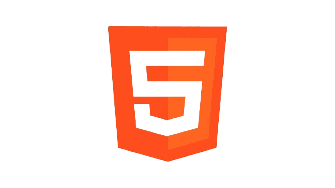
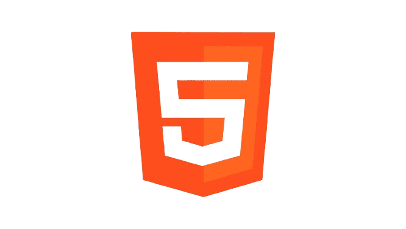

Juan David Marin
- Sobre mi
- Habilidades
- Educacion
- Experiencia
Hola a todos!
Soy Juan David Marin
Soy un desarrollador de software
Sobre mi
Soy técnico en Análisis y Desarrollo de Software con formación sólida en programación, desarrollo web y móvil, bases de datos y metodologías ágiles. Me caracterizo por ser una persona proactiva, adaptable y orientada a la solución de problemas, con habilidades blandas que favorecen el trabajo en equipo, la comunicación efectiva y la organización. Me apasiona aprender nuevas tecnologías y aportar soluciones prácticas que generen valor tanto en proyectos individuales como colaborativos.
Mis Habilidades
Habilidades blandas
Cuento con habilidades blandas como comunicación efectiva, trabajo en equipo, adaptabilidad y pensamiento crítico. Me destaco por ser proactivo, con buena gestión del tiempo, actitud positiva y empatía en entornos colaborativos. Además, tengo capacidad para resolver conflictos de manera constructiva y escuchar activamente, lo que contribuye a un ambiente de trabajo productivo y respetuoso.
Habilidades tecnicas
Manejo lenguajes como JavaScript, Python, Dart y PHP. Experiencia en desarrollo web con HTML, CSS, Bootstrap y conocimientos básicos en React y Node.js. Desarrollo móvil con Flutter. Bases de datos: MySQL, PostgreSQL. Uso de Git, GitHub y herramientas como VS Code, Android Studio y Insomnia. Conocimiento en APIs REST, metodologías ágiles (Scrum), modelado UML.
 

Educación
2023 - 2024
Bachiller tecnico en Desarrollo de Software
Bachiller tecnico en analisisi y desarrollo de software en la articulacion con el SENA. Durante mi formación, adquirí habilidades en programación, desarrollo web y móvil, bases de datos y metodologías ágiles. Participé en proyectos prácticos que me permitieron aplicar mis conocimientos en entornos reales, lo que fortaleció mi capacidad para resolver problemas y trabajar en equipo.
2025 - Actualidad
Curso de Desarrollo Web
Certificación en Desarrollo Web con JavaScript, HTML y CSS. Durante este curso, adquirí conocimientos avanzados en diseño y desarrollo de interfaces web, estilos responsivos y programación interactiva. Aprendí a crear sitios web dinámicos y funcionales, aplicando buenas prácticas de codificación y diseño.
2025 - Actualidad
Curso de Desarrollo Móvil
Certificación en Desarrollo Móvil con Flutter. Durante este curso, aprendí a crear aplicaciones móviles multiplataforma utilizando el framework Flutter. Adquirí habilidades en diseño de interfaces, gestión de estados y consumo de APIs, lo que me permitió desarrollar aplicaciones funcionales y atractivas para dispositivos móviles.
2025 - Actualidad
Tecnologo en Analisis y Desarrollo de software
Actualmente, estoy cursando el programa de Tecnología en Análisis y Desarrollo de Software. Este programa me brinda una formación integral en programación, desarrollo de aplicaciones y gestión de proyectos. Estoy adquiriendo habilidades avanzadas en lenguajes de programación, bases de datos y metodologías ágiles, lo que me prepara para enfrentar desafíos en el campo del desarrollo de software.
Experiencia
2024 - Actualidad
Práctica Profesional
Actualmente, estoy realizando mis prácticas profesionales en una empresa de desarrollo de software. Durante esta experiencia, estoy aplicando mis conocimientos en programación y desarrollo web, participando en proyectos reales y colaborando con un equipo de profesionales. Estoy adquiriendo habilidades prácticas en el entorno laboral y contribuyendo al desarrollo de soluciones tecnológicas.
2023 - Actualidad
Desarrollador Web Freelance
He trabajado como desarrollador web freelance, creando sitios web y aplicaciones para clientes. Durante esta experiencia, he aplicado mis habilidades en HTML, CSS y JavaScript para desarrollar soluciones personalizadas. He gestionado proyectos de principio a fin, desde la planificación hasta la implementación, lo que me ha permitido mejorar mis habilidades de comunicación y gestión del tiempo.